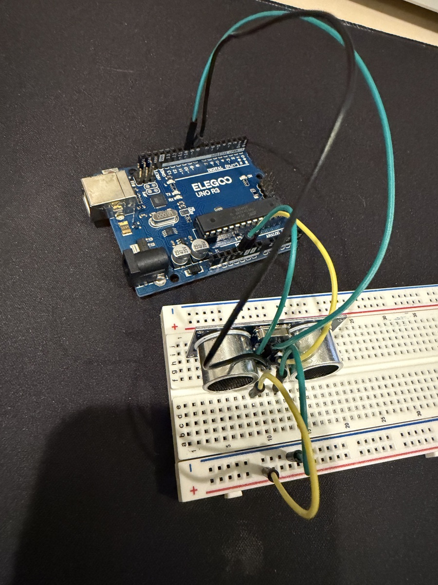

Innovator Journal · Unit 1 Summative
Distance Warning System
Using an ultrasonic sensor and LED as a proximity warning
← HomeGoal and interest area
One area I want to improve in is working with analog input and changing sensor values. I still struggle with some of the basics when I have to build and program an analog circuit without guidance. I chose this Arduino extension because I wanted more practice making a circuit where multiple components work together instead of only controlling one part at a time.
My current build measures the distance between an object and an ultrasonic sensor. It then uses an LED as a visual warning. When an object gets closer to the sensor, the LED becomes brighter. When the object gets farther away, the LED becomes dimmer until it eventually turns off.
Even though the ultrasonic sensor itself is not an analog input, this project still helped me understand how a changing sensor measurement can be converted into a changing output. The program takes the distance measurement and maps it to a brightness value for the LED. This is useful preparation for working with actual analog sensors in the future.
New component and research
The component that is new to me in my build is the ultrasonic sensor. Before this project, I had not worked with a sensor that measures distance. I used Arduino's Ping Ultrasonic Range Finder example to understand the basic idea behind ultrasonic distance measurement.
The ultrasonic sensor works by sending out a very short sound pulse at a frequency that humans can't hear. The TRIG pin tells the sensor when to send this pulse. When the sound hits an object, it reflects back toward the sensor. The ECHO pin measures how long it takes for the reflected sound to return.
The Arduino can use this amount of time to calculate distance. Since the sound has to travel from the sensor to the object and then back to the sensor, the calculation divides the total distance traveled by two.
One important thing I learned is that an ultrasonic sensor is not an analog input. Instead of giving the Arduino a changing voltage through an analog pin like A0, it gives the Arduino a pulse whose length represents the distance. However, I can still use the distance as a changing value inside my program.
In a future version, I could add a photoresistor connected to A0. This would allow me to practice true analog input by using analogRead() to measure different light levels. I could then combine light level and distance so that the warning system reacts differently depending on the environment.
Current circuit and wiring
- Ultrasonic sensor
- VCC → 5V rail; GND → GND rail; TRIG → D3; ECHO → D2
- LED
- D5 → 220 Ω resistor → LED anode; LED cathode → GND rail
The VCC pin gives the ultrasonic sensor power, while GND completes the electrical circuit. The TRIG pin is connected to digital pin 3 because the Arduino needs to send a short signal to tell the sensor when to measure. The ECHO pin connects to digital pin 2 so that the Arduino can measure how long the returning pulse lasts.
Current Circuit and Wiring
Ultrasonic Sensor
- VCC → 5V rail
- GND → GND rail
- TRIG → D3
- ECHO → D2
The VCC pin gives the ultrasonic sensor power, while GND completes the electrical circuit. The TRIG pin is connected to digital pin 3 because the Arduino needs to send a short signal to tell the sensor when to measure. The ECHO pin connects to digital pin 2 so that the Arduino can measure how long the returning pulse lasts.
LED
- D5 → 220 Ω resistor → LED anode
- LED cathode → GND rail
Digital pin 5 is important because it is a PWM-capable pin. This allows me to use analogWrite() to control the apparent brightness of the LED instead of only turning it completely on or completely off.
The 220 Ω resistor protects the LED by limiting the amount of current flowing through it. Without the resistor, too much current could potentially damage the LED.
The parts share the breadboard's 5V and GND rails. This was an important part of my circuit because the Arduino only has a limited number of direct 5V and GND connections. By connecting the Arduino's 5V and GND to the breadboard rails, multiple components can use the same power and ground connections.
I learned that components in the same circuit also need to share a common ground so that their signals have the same electrical reference point.
Prototype, troubleshooting, and peer support
One of the biggest parts of this project was troubleshooting. My circuit did not immediately work the way I wanted it to, so I had to check both my wiring and my code.
At first, my ultrasonic sensor kept producing the same numbers instead of changing when I moved an object closer or farther away. This made me realize that even if the code looks correct, the circuit can still fail because of a wiring problem.
Matthew Ma helped me troubleshoot the ultrasonic sensor wiring. We checked the power, ground, TRIG, and ECHO connections to make sure they matched the pins being used in the code. This helped me understand how closely the physical circuit and the program have to match. If the code says that TRIG is connected to D3 but the wire is actually connected somewhere else, the sensor will not work correctly.
Matthew also helped me solve a problem when I wanted to add the LED. At first, I was unsure how I could power another part when the Arduino's 5V pin was already being used. I learned that I could connect the 5V and GND pins to the power rails on the breadboard. Then both the LED circuit and ultrasonic sensor could share those rails. This taught me more about how a breadboard distributes power.
I also helped Steven Shi troubleshoot his lightbulb and wiring. We checked things such as LED direction, whether wires were placed in the correct breadboard rows, and whether the circuit had a complete path to ground. Helping someone else troubleshoot was useful because it forced me to explain what I was checking instead of only trying random changes.
It showed me that some of the most common Arduino problems come from very small mistakes.
The Process
Stage 1: Connecting and Testing the Ultrasonic Sensor

The first major step was attaching the ultrasonic sensor to the Arduino and breadboard. I connected VCC and GND first so the sensor could receive power. I then connected TRIG and ECHO to the digital pins that matched my program.
At this point, my main goal was not to control the LED yet. I first wanted to confirm that the ultrasonic sensor could successfully measure distance on its own. I used the Serial Monitor to look at the distance values being produced by the Arduino.
This stage was important because testing one part at a time made troubleshooting easier. If I had connected every component immediately, I would not have known whether a problem was coming from the ultrasonic sensor, LED, wiring, or code.
At first, the sensor kept giving similar or incorrect readings. I checked the connections and made sure the TRIG and ECHO pins matched the numbers written in my code. After troubleshooting the circuit, the distance readings began changing when I moved objects toward and away from the sensor.
Stage 2: Adding the LED
After I got the sensor working, I added the LED to the circuit. The LED was connected to digital pin 5 through a 220 Ω resistor, with the other side connected to ground.
The resistor was necessary because an LED should not be connected directly between an Arduino output pin and ground without current limiting. I also had to make sure the LED was facing the correct direction because LEDs are polarized components.
One problem I had during this stage was figuring out how to power multiple parts when some of the Arduino's power connections were already being used. This is where I learned to use the breadboard's 5V and GND rails as shared connections.
Once the LED successfully powered on, I knew that the LED part of the circuit was functioning. The next challenge was making the LED respond correctly to information from the ultrasonic sensor.
Stage 3: Combining the Sensor and LED
After testing both components individually, I combined them in the same program. The ultrasonic sensor measured distance, and the Arduino used that distance to determine how bright the LED should be.
At first, the sensor and LED were technically working together, but they were not working the way I intended. The LED response was not always consistent with the distance I expected. This showed me the difference between a circuit simply "working" and a circuit working correctly according to my goal.
I had to look at the readings in the Serial Monitor while also watching the LED. This allowed me to compare the actual distance measurement with the brightness value being sent to the LED.
I eventually changed the useful distance range to about 2–30 cm. Anything close to 2 cm should cause the LED to reach full brightness, while an object around 30 cm away should cause the LED to turn off. Values in between those distances create different brightness levels.
This stage helped me understand why testing and revising are such important parts of building an Arduino project. The first version does not have to work perfectly. Each test gives me information that I can use to improve the next version.
Arduino Code
This sketch makes the LED brighter as an object gets closer to the ultrasonic sensor. At approximately 2 cm or closer, the LED reaches maximum brightness. As the object moves farther away, the LED gradually becomes dimmer. At 30 cm or farther, it turns off.
// Pin definitions
const int trigPin = 3;
const int echoPin = 2;
const int ledPin = 5; // Must be a PWM pin (labeled with ~)
// Shorter distance range configuration (in centimeters)
const int minDistance = 2; // Full brightness at 2 cm or closer
const int maxDistance = 30; // LED turns off completely at 30 cm or farther
void setup() {
Serial.begin(9600);
pinMode(trigPin, OUTPUT);
pinMode(echoPin, INPUT);
pinMode(ledPin, OUTPUT);
}
void loop() {
// Clear trigger pin
digitalWrite(trigPin, LOW);
delayMicroseconds(2);
// Send 10us trigger pulse
digitalWrite(trigPin, HIGH);
delayMicroseconds(10);
digitalWrite(trigPin, LOW);
// Read echo duration with 30ms timeout to prevent hanging
long duration = pulseIn(echoPin, HIGH, 30000);
// Calculate distance in cm
int distance = duration * 0.034 / 2;
// Constrain distance within our new 2cm–30cm range
int clampedDistance = constrain(distance, minDistance, maxDistance);
// Map distance to PWM brightness (0 to 255)
int brightness = map(clampedDistance, minDistance, maxDistance, 255, 0);
// Write PWM signal to LED
analogWrite(ledPin, brightness);
// Output readings to Serial Monitor
Serial.print("Distance: ");
Serial.print(distance);
Serial.print(" cm | Brightness: ");
Serial.println(brightness);
delay(100); // Short delay for stable readings
}How the Code Works Step by Step
1. Defining the Pins
const int trigPin = 3;
const int echoPin = 2;
const int ledPin = 5;
These lines tell the Arduino which physical pins each component is connected to. trigPin is connected to pin 3, echoPin is connected to pin 2, and the LED is connected to pin 5.
Pin 5 is a PWM pin, which is important because I want the LED to have different brightness levels instead of only being on or off.
Using variables for the pin numbers also makes the program easier to change. For example, if I moved the LED from pin 5 to another PWM pin, I would only need to change the value at the top of the program.
2. Setting the Distance Range
const int minDistance = 2;
const int maxDistance = 30;These values establish the range where the LED changes brightness.
At 2 cm or closer, I want the LED to be fully bright. At 30 cm or farther, I want the LED to be off.
This means that the most noticeable warning happens when an object gets very close to the sensor.
3. Setting Up the Serial Monitor and Pin Modes
void setup() {
Serial.begin(9600);
pinMode(trigPin, OUTPUT);
pinMode(echoPin, INPUT);
pinMode(ledPin, OUTPUT);
}
The setup() function runs once when the Arduino starts.
Serial.begin(9600); starts communication between the Arduino and the computer. This allows me to see information such as distance and LED brightness in the Serial Monitor.
The pinMode() commands tell the Arduino how each pin will be used.
The TRIG pin is an OUTPUT because the Arduino sends a signal from that pin to the ultrasonic sensor.
The ECHO pin is an INPUT because the Arduino receives the returning signal through that pin.
The LED pin is an OUTPUT because the Arduino sends a PWM signal to control the LED.
4. Making Sure TRIG Starts LOW
digitalWrite(trigPin, LOW);
delayMicroseconds(2);Before starting a new measurement, the program makes sure the TRIG pin is LOW for 2 microseconds.
This gives the sensor a clean starting point before the trigger pulse is sent.
5. Sending the Ultrasonic Trigger Pulse
digitalWrite(trigPin, HIGH);
delayMicroseconds(10);
digitalWrite(trigPin, LOW);The Arduino raises the TRIG pin to HIGH for 10 microseconds and then changes it back to LOW.
This short pulse tells the ultrasonic sensor to send out an ultrasonic sound wave.
6. Measuring the Returning Echo
long duration = pulseIn(echoPin, HIGH, 30000);
The pulseIn() function measures how long the ECHO pin stays HIGH.
That amount of time represents how long the ultrasonic sound took to travel to an object and return.
The 30000 gives the command a timeout of 30,000 microseconds. This prevents the Arduino from getting stuck waiting forever if no echo is detected.
7. Converting Time Into Distance
int distance = duration * 0.034 / 2;This line converts the echo time into centimeters.
Sound travels at approximately 0.034 centimeters per microsecond, so multiplying duration by 0.034 gives the approximate total distance traveled by the sound.
The result is divided by two because the sound travels two directions: first from the sensor to the object and then from the object back to the sensor.
For example, if the total sound travel distance was 40 cm, the actual object would be approximately 20 cm away.
8. Keeping the Distance Inside the Useful Range
int clampedDistance = constrain(distance, minDistance, maxDistance);
The constrain() function prevents values from going outside my chosen 2–30 cm range.
If the sensor reads 1 cm, the program treats it as 2 cm.
If the sensor reads 50 cm, the program treats it as 30 cm.
This is useful because I only want the LED brightness to change inside this range.
9. Converting Distance Into Brightness
int brightness = map(clampedDistance, minDistance, maxDistance, 255, 0);
The map() function converts one range of numbers into another range.
My distance range is:
2 cm → 30 cm
The LED brightness range is:
255 → 0
A PWM value of 255 means maximum brightness, while 0 means the LED is off.
The ranges are reversed because I want a smaller distance to create a brighter LED.
For example:
- Very close object → brightness near 255
- Medium-distance object → medium brightness
- Farther object → brightness near 0
10. Sending the Brightness Value to the LED
analogWrite(ledPin, brightness);This sends the calculated brightness value to the LED using PWM.
Even though the command is called analogWrite(), the Arduino is not actually creating a true analog voltage on pin 5. Instead, it rapidly switches the pin on and off. Changing the amount of time the signal stays on makes the LED appear brighter or dimmer.
11. Printing Information to the Serial Monitor
Serial.print("Distance: ");
Serial.print(distance);
Serial.print(" cm | Brightness: ");
Serial.println(brightness);These lines display both the measured distance and calculated brightness.
For example, the Serial Monitor might display:
Distance: 12 cm | Brightness: 163This was especially useful when troubleshooting because I could compare what the program thought was happening with what I actually saw the LED doing.
12. Adding a Short Delay
delay(100);Finally, the program waits 100 milliseconds before taking another measurement.
Without a short delay, measurements could happen extremely quickly and make the Serial Monitor harder to read. The delay also helps make the readings and LED response more stable.
After the delay, the loop() function starts again and repeats the entire process.
Skills I Developed
Throughout this project, I developed several skills that I can use in future Arduino projects.
One major skill was circuit building. I became more comfortable using a breadboard, connecting components to power and ground rails, and understanding how multiple components can share the same power supply.
I also improved my understanding of Arduino inputs and outputs. The ultrasonic sensor taught me that not every sensor works through analogRead(). Different sensors can communicate with the Arduino in different ways. In this case, the Arduino measures the length of the ECHO pulse to determine distance.
Another skill I practiced was PWM output. Before this project, I mainly thought about LEDs as being either on or off. Using analogWrite() showed me how the Arduino can make an LED appear to have many different brightness levels.
The skill I improved the most was debugging. When something did not work, I learned not to immediately assume that the entire project was broken. Instead, I could test individual parts. I could check whether the sensor was producing values, check whether the LED worked by itself, check the breadboard connections, and compare my wiring to the pin numbers in my code.
I also developed collaboration and communication skills. Matthew helped me solve problems with my own circuit, and I helped Steven troubleshoot his circuit. Both experiences showed me that asking another person to look at a problem can reveal something I missed. Helping someone else also strengthened my own understanding because I had to think about why the circuit worked instead of only copying the correct wiring.
Finally, I feel more confident with Arduino. I still needed help during parts of the project, but I now understand more about how to approach a circuit when it does not work. Instead of immediately asking someone for the answer, I can check power, ground, component direction, pin numbers, Serial Monitor values, and the code one step at a time.
Future Improvement
A warning system like this could be useful for someone who is getting too close to a wall, another object, or an obstacle. The ultrasonic sensor can detect the distance while the LED provides a visual warning that becomes more noticeable as the object gets closer.
One improvement I would make is adding a piezo buzzer. The LED would continue acting as the visual warning, while the buzzer could provide an audio warning when something becomes dangerously close. I could also make the buzzer beep faster as the distance decreases.
Another improvement would be adding a photoresistor connected to A0. This would allow me to practice the analog input skills that I originally wanted to improve. For example, the Arduino could measure the amount of light in the room and automatically make the warning LED brighter in bright conditions or dimmer in dark conditions.
Eventually, I could combine the ultrasonic sensor, LED, buzzer, and photoresistor into one system. That would give me even more practice making several inputs and outputs work together.
Reflection
This project helped me understand that building an Arduino project is more than connecting components and copying code. The circuit and the program have to work together. A small error in either one can cause the entire system to behave differently than expected.
One of the biggest things I learned was how important it is to break a problem into smaller parts. When the complete system was not working correctly, I could test the ultrasonic sensor by itself, test the LED separately, check the wiring, and use the Serial Monitor to see what the Arduino was actually calculating.
I also learned that troubleshooting is not separate from building the project. Troubleshooting is part of the process. Problems such as a loose wire, a wire placed in the wrong breadboard column, an LED facing the wrong direction, a missing shared ground, or code using the wrong pin number can all stop a circuit from working.
The skill I would rely on most if I continued developing this project is debugging. I now have a better process for finding problems instead of randomly changing parts of the circuit.
This project also helped me become more comfortable combining multiple components. At the beginning, I was unsure about things such as sharing the 5V and GND rails. By the end, I had a sensor measuring distance, code processing that measurement, and an LED responding with a changing brightness.
Although this project did not use a true analog input yet, it gave me a stronger foundation for my next project. I now understand more about changing sensor values, PWM output, circuit wiring, debugging, and how different parts of a program connect together. My next step would be adding a true analog sensor so I can continue working toward my original goal of becoming more independent with analog input.